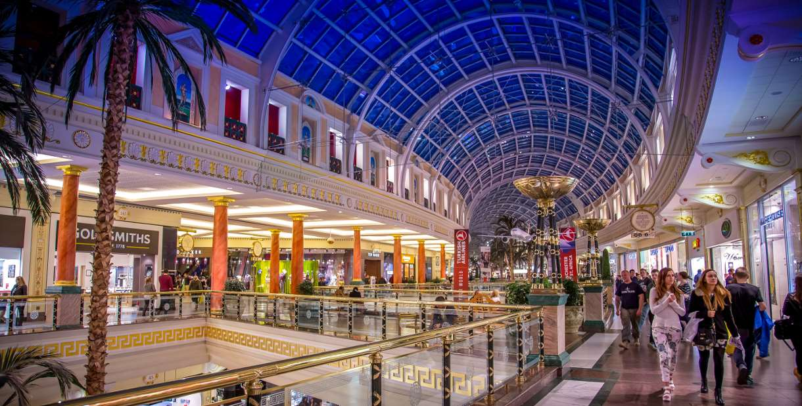

Home Trafford centre Manchester People's Museum Manchester Museum The John Library
The Trafford centre is a large mall where it has many, many places for you to explore!

The Trafford centre is home to lots of stores, resturants and attractions! A few notable places within the trafford centre include: Legoland, SeaLife and the hall. The Sealife and legoland in the trafford centre are two large attractions at the trafford centre which can be exciting for some people but if thats not your type there's always other activities such as lazertag, golf, the cinema and the Namco Funscape which is the largest arcade in the building that contains over 18 lanes of bowling, over 150 video and arcade games, Europe's fastest dodgems and for the adults they have an american pool hall and a newly refurbished bar and lounge area with large-screen sports.
For more information, click the links below!